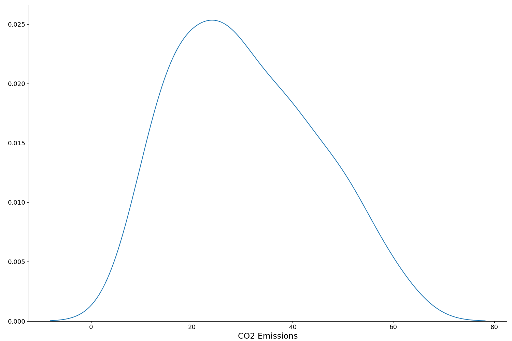
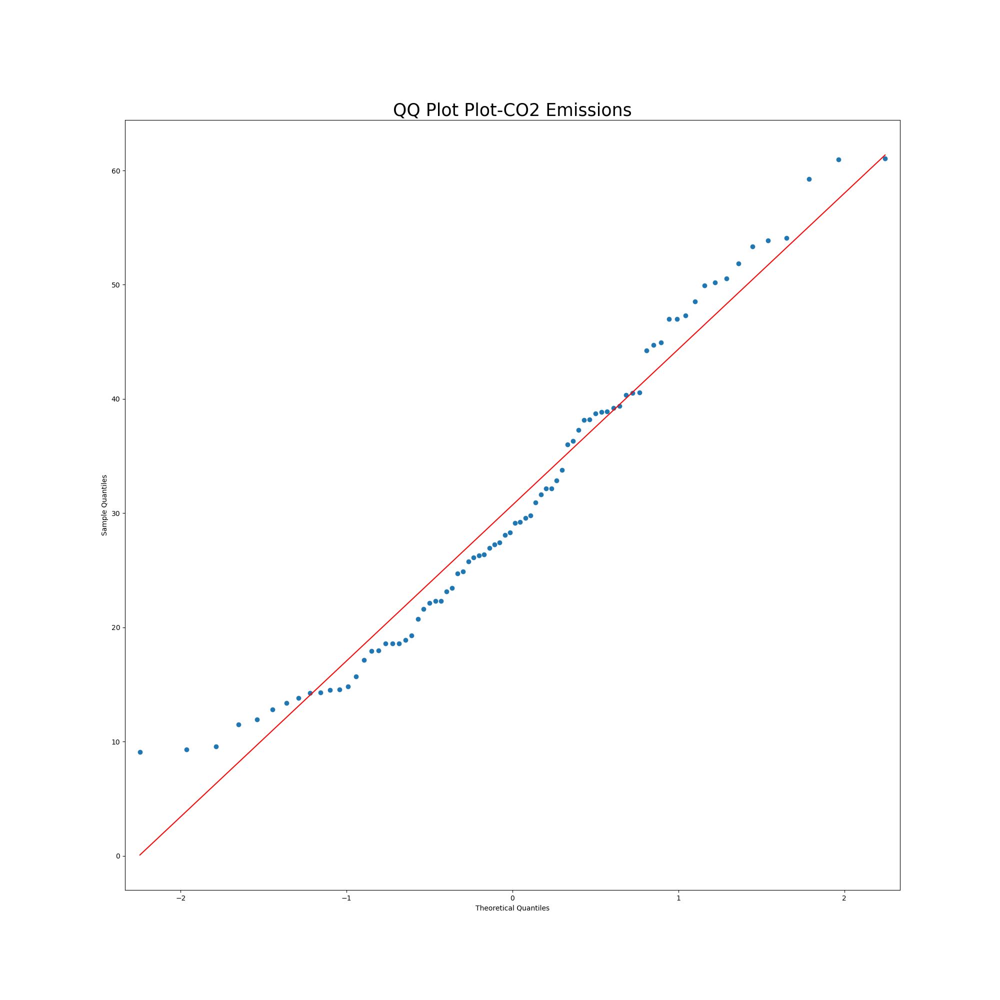
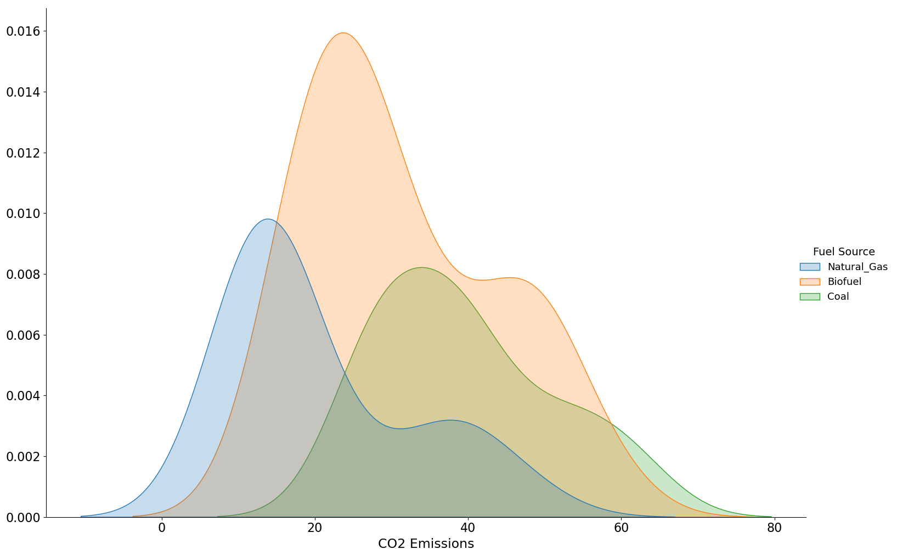
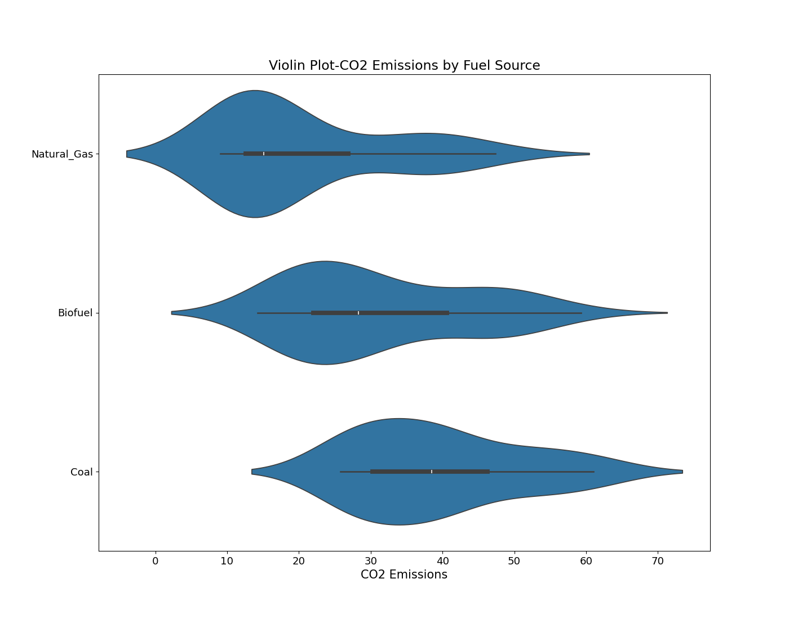
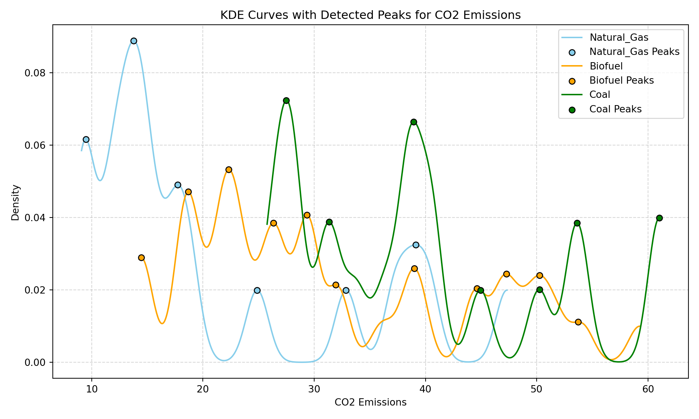

Show Code
import pandas as pd
import seaborn as sns
import numpy as np
import matplotlib.pyplot as plt
from statsmodels.graphics.gofplots import qqplot
from scipy.stats.distributions import norm
import scipyThis data set is from Kaggle. Exploring Experimental Design in the Energy Field
The premise is for us to investigate the impact of various fuel sources on CO2 emissions across different geographical regions. We first must determine which type of experimental design was used for this study. One type of experimental design has been determined, our goal will be to assess which assigned fuel source contributes the most to CO2 emissions and whether this varies depending on location.
The data is from four distinct geographical regions: North, South,
East, and West. In each region, multiple fuel sources—Natural Gas,
Biofuel, and Coal—are used to generate energy. The resulting CO2
emissions are measured to evaluate the environmental impact of each fuel
source.
import pandas as pd
import seaborn as sns
import numpy as np
import matplotlib.pyplot as plt
from statsmodels.graphics.gofplots import qqplot
from scipy.stats.distributions import norm
import scipyWe’ll first examine the energy design b structure
energy_design_b.info()<class 'pandas.core.frame.DataFrame'>
RangeIndex: 80 entries, 0 to 79
Data columns (total 3 columns):
# Column Non-Null Count Dtype
--- ------ -------------- -----
0 Geographical_Region 80 non-null object
1 Fuel_Source 80 non-null object
2 CO2_Emissions 80 non-null float64
dtypes: float64(1), object(2)
memory usage: 2.0+ KBFrom the output we find the the dimensions are 80 rows and three columns.
energy_design_b.head() Geographical_Region Fuel_Source CO2_Emissions
0 North Natural_Gas 11.490142
1 North Natural_Gas 9.585207
2 North Natural_Gas 11.943066
3 North Natural_Gas 14.569090
4 North Natural_Gas 9.297540Next, let’s check the count of the different regions and fuel sources.
energy_design_b.Fuel_Source.value_counts()Fuel_Source
Biofuel 40
Natural_Gas 20
Coal 20
Name: count, dtype: int64energy_design_b.Geographical_Region.value_counts()Geographical_Region
North 20
South 20
East 20
West 20
Name: count, dtype: int64From our counts we find regions split into equal groups of 20. Fuel source has Biofuel at 40 observations and 20 observations each for Natural Gas and Coal.
Finally, we’ll group the observations by Geographical Region and Fuel Source.
energy_design_b.groupby(['Geographical_Region', 'Fuel_Source']).count() CO2_Emissions
Geographical_Region Fuel_Source
East Biofuel 10
Coal 5
Natural_Gas 5
North Biofuel 10
Coal 5
Natural_Gas 5
South Biofuel 10
Coal 5
Natural_Gas 5
West Biofuel 10
Coal 5
Natural_Gas 5From the grouping we can clearly see that region has been split into four blocks. Fuel source type is equally applied among all four regions with Biofuel at 10, and Coal and Natural Gas at 5 each. Based on these splits, we conclude that the experimental design of this data set is a block design
Geographical Region is our block.
Fuel source is our treatment, as it is a change that is given to a group.
For this study, the outcome variable is CO2 emissions.
We are trying to measure the effect of the treatment on our output variable.
We will use visualizations and statistics to understand whether the distribution of CO2 Emissions is normal. A normal distribution is reflected as a bell shape. The mean and median for a normal distribution are the same. The image below is an example of a normal distribution.


Our distribution plot resembles a bell shape though the skew to the right creates an asymmetric (irregular) shape. This is an indication of a non-normal distribution.
We’ll use a qq plot to confirm our observation of a non-normal distribution for CO2 Emissions.

In a qq plot a normal distribution would show all points hugging the straight line. The further from a straight line the points get the further from a non-normal distribution we are. From our qq plot we find our points deviate from the straight line around the middle and at the ends. This is another indication of non-normality.
Since both the QQ and distribution plots show that the variable “CO2 Emissions” is not normally distributed, we’ll check our visualizations with statistics.
mean=energy_design_b.CO2_Emissions.mean()
median=energy_design_b.CO2_Emissions.median()Mean for CO2 Emissions is: 30.72 and median is 28.72The mean for CO2 emissions is slightly larger the median which explains the skew to the right we saw in from the distribution plot.
Before we start, we’ll review hypothesis testing which will be used for the Shapiro-Wilk test and all other statistical tests used in our design analysis. Those who do not require a review of hypothesis testing can go directly to the Shapiro-Wilk section.
The goal of hypothesis testing is to decide whether the data we have is sufficient to support a particular hypothesis. To draw a conclusion, we will need to distinguish between two hypotheses (cases) and determine which one is true.
First, we define the null hypothesis which corresponds to “no effect”, “no difference”, or “no relationship”. Put another way, the null hypothesis states that there isn’t anything interesting happening and the observed patterns are by chance. Next, we set the alternative hypotheses which corresponds to “there is an effect”, “there is a difference”, or “there is a relationship”. This can be thought of as the observed patterns are not by chance and there is something interesting happening.
When we run a statistical test, we can either reject or fail to reject the null hypothesis, depending on whether we find an effect. Finding an effect can be thought of as positive while not finding an effect is a negative, and our conclusion will either be correct or incorrect. If we are incorrect, we can have either a false positive or a false negative. A false positive occurs when a hypothesis test results in rejecting the null hypothesis when in fact it is true. This a type I error. This can be thought of as finding a difference where none exists (supporting the alternative hypothesis. A false negative or failing to find a difference that is there (Fail to reject the null hypothesis when it is false), is a type II error.
Once we have our null hypothesis we must determine when to reject it. We use the p-value which is the probability of observing a result (or more extreme) assuming the null hypothesis is true. That is, the observed difference is due to chance. Put another way, the p-value tells us how surprising our results are if there were really no effect or difference (null hypothesis is true). A high p-value means the results are not surprising and could easily happen by chance. A low p-value means the results are unlikely to happen by chance, which could suggest something real might be going on. We can use an analogy to describe the p-value. Earlier we described the null hypothesis as stating there isn’t anything interesting happening. If the p-value is low, we can say this is surprising under the assumption that nothing is happening, and we should question this assumption. On the other hand, if the p-value is high, we can say that there’s nothing unusual happening, probably just random variation.
We determine whether the p-value is low or high by using the significance level (alpha) as a cutoff point. This is chosen ahead of time to decide if a p-value is low enough to say the result is statistically significant. For our testing we’ll be using a significance level of .05 which means we’re willing to accept a 5% chance of being wrong if we reject the null hypothesis (Type 1 error). If the p-value is below alpha, we say the result is statistically significant and likely not just due to chance.
We’ll now visualize distributions with are data split by Fuel Source.

All three fuel sources have skews to the right with Natural Gas having a longer right tail than the other fuel sources. Natural Gas has a primary peak around 10-20 CO2 Emissions and a smaller second bump near 40-50. Biofuel has a primary peak around 20-25 and a smaller, flatter bump around 45-50. These second bumps could suggest slight multimodal or a subgroup within higher emissions. Coal does not exhibit a pronounced second peak as the other two fuel sources though there appears to be small bump to the right of the primary peak.

The violin plots confirm what we observed from the distribution plots. The tails to the right of the violin plots are equivalent to the right skewed tails we observed in our distribution plots with the the plots wider on the left but with a thin tail on the right. In addition, we observe for Natural Gas and Biofuel, the right tail is asymmetric (irregular), which could be representative of the second bumps we observed on the distribution plots. The right tail for Coal appears to slightly asymmetric which could be a second peak.
Our visual observations of CO2 Emissions by fuel source indicated possible differences in skew and multiple peaks. We’ll confirm this by applying statistical methods to calculate magnitude of skew and multimodality (multipe peaks) strength.
from scipy.stats import skew
from scipy.stats import gaussian_kde
from scipy.signal import find_peaksFirst, we’ll quantify skew direction and magnitude of the Fuel Source group.
fuel_sources=energy_design_b['Fuel_Source'].unique()
skewness_results={}
for fuel in fuel_sources:
data=energy_design_b[energy_design_b['Fuel_Source'] == fuel]['CO2_Emissions']
skewness_results[fuel] = skew(data)**Skewness results for Fuel Source**
Natural Gas: 1.021
Biofuel: 0.559
Coal: 0.615Skew magnitude: Negative magnitude would indicate a left skew, and positive magnitude indicates right skew.
Skew Magnitude
0 to 0.5: Slight skew
0.5 to 1: Moderate skew
Greater than 1: Strong skew
The skewness results support our observations from the distribution and violin plots: Natural Gas’s skew rates as a strong skew, matching the longer right tail observed in the plots. Biofuel and Coal show moderate right skews, suggesting some outliers though not as extreme as Natural Gas.
Next we’ll check if there are multiple peaks using multimodality test.
def test_multimodality(data, smoothing=1.0):
"""Estimate number of modes using KDE and find_peaks."""
kde = gaussian_kde(data, bw_method=smoothing / np.std(data, ddof=1))
x_grid = np.linspace(min(data), max(data), 1000)
kde_values = kde.evaluate(x_grid)
# Find peaks in KDE curve
peaks, _ = find_peaks(kde_values)
num_peaks = len(peaks)
return num_peaks, x_grid, kde_values, peaks
modality_results = {}
plot_data = {} # Store for visualization
for fuel in fuel_sources:
data = energy_design_b[energy_design_b['Fuel_Source'] == fuel]['CO2_Emissions']
num_peaks, x_grid, kde_values, peaks = test_multimodality(data)
modality_results[fuel] = num_peaks
plot_data[fuel] = (x_grid, kde_values, peaks)
NaturalGas_modal_results=modality_results['Natural_Gas']
Biofuel_modal_results=modality_results['Biofuel']
Coal_modal_results=modality_results['Coal']**Multimodality results for Fuel Source**
Natural Gas: 6
Biofuel: 11
Coal: 7Biofuel has a high number of peaks (11) which points to strong multimodality. Natural Gas has 6 distinct peaks which suggest likely multimodality. Coal has 7 peaks pointing to likely multimodality. These results validate that the data is varied (heterogenous) within each fuel source. The modality results point to a larger difference between Natural Gas and Biofuel while Biofuel and Coal are much closer than what ww observed in the visualizations.
The plot below helps visualize the number of peaks for each Fuel Source.
# Plot KDEs with peaks marked
plt.figure(figsize=(10, 6))
colors = {'Natural_Gas': 'skyblue', 'Biofuel': 'orange', 'Coal': 'green'}
for fuel in fuel_sources:
x_grid, kde_values, peaks = plot_data[fuel]
plt.plot(x_grid, kde_values, label=fuel, color=colors[fuel])
plt.scatter(x_grid[peaks], kde_values[peaks], color=colors[fuel], edgecolor='k', zorder=5, label=f"{fuel} Peaks")
plt.title('KDE Curves with Detected Peaks for CO2 Emissions')
plt.xlabel('CO2 Emissions')
plt.ylabel('Density')
plt.legend()
plt.grid(True, linestyle='--', alpha=0.5)
plt.tight_layout()
plt.show()
The skewness and modality results indicate shape variation which might mean non-normality and distribution differences of CO2 Emissions between fuel sources. We will revisit this in our post-hoc analysis.
We are going to use statistical tests to consider possible effect of fuel (treatment) on CO2 Emissions (outcome) and how sure we are that this effect exists.
Our test for normality confirmed CO2 Emissions is not normally distributed thus we will use the non-parametric Krusskal-Wallis tests for our analysis. Non-parametric tests don’t assume a distribution relying on the median and ranked based comparisons. Parametric test on the other hand assumes a normal distribution and really on the mean and variance to compare groups. Kruskal-Wallis test for overall differences ignoring blocks.
from scipy.stats import ttest_ind
from statsmodels.sandbox.stats.multicomp import multipletests
from scipy.stats import kruskal
k_stat, k_pval=kruskal(
energy_design_b[energy_design_b['Fuel_Source'] == "Natural_Gas"]['CO2_Emissions'],
energy_design_b[energy_design_b['Fuel_Source'] == "Biofuel"]['CO2_Emissions'],
energy_design_b[energy_design_b['Fuel_Source'] == "Coal"]['CO2_Emissions']
)Null Hypothesis: There is no difference in median CO2 Emissions between fuel source groups.
Alternative Hypothesis: There is Significant difference of median CO2 Emissions between at least two fuel source groups.
Alpha=0.05
Krusskal-Wallis test p-value: 0.0000The p-value of 0.00 is less than the significance level of .05, thus we can conclude there is a difference in medians of CO2 Emissions between at least two fuel source groups. We have enough evidence to reject the null hypothesis.
Now that we have found significant results that differences exist we now want to determine how big these differences are. In other words, we wish to quantify the magnitude of a difference. Effect size is how important variation between treatments is. Outcomes with treatment A are Y higher than outcomes with treatment B.
U Statistic
The U statistic is used to determine how separated or intermixed the groups’ ranks are.
It compares two independent groups by ranking all the data from lowest to highest
It then measures how many times a score from one group is less than a score in the other group. The U value represents a count of how many times a score from one group exceeds a score from another group.
The statistical significance is determined using the smaller U value because it corresponds to the greatest departure from the null hypothesis (i.e., the largest observed difference between groups).
High U value – The groups have similar ranks (small difference)
Low U value – One group consistently has higher or lower values than the other.
Effect Size (r)
Effect size is how large the difference between groups is. It helps us provide practical meaning to our results by indicating how important the variation between groups (magnitude of difference).
r < 0.3 Small difference (may not be important practically)
r 0.3–0.5 Moderate difference (likely important)
r > 0.5 Large difference (definitely important)
Z Score (z)
Provides us with the direction of the effect.
Negative Z – The first group tends to have lower values than the second group.
Positive Z – The first group tends to have higher values than the second group.
P-Values
P-values Tell us whether the difference between groups is statistically significant. When performing many tests simultaneously there is a risk of falsely concluding that a significant result exists. To correct for this possibility adjusted p-values are used to control for errors.
Adjusted P-Values
Bonferroni Correction-controls the family-wise error rate (FWER), which is the probability of making at least one false positive (Type I error) among all tests. It is a conservative method, meaning it is more likely to lead to false negatives (failing to find a significant result when one truly exists)
Holm-Bonferroni Correction- Is a method for controlling the family-wise error rate (FWER) when performing multiple hypothesis tests. It’s a less conservative approach than the traditional Bonferroni correction, meaning it’s more likely to detect true positive effects while still maintaining control over false positives.
Benjamini-Hochberg Procedure, - also known as the False Discovery Rate (FDR) procedure, is a statistical method used to control the expected proportion of false discoveries. when multiple tests are performed. The probability of obtaining at least one false positive result increases leading to an increased overall type I error rate. The Benjamini-Hochberg procedure addresses this issue by controlling the FDR, which is defined as the expected proportion of false positives among the rejected hypotheses.
from scipy.stats import wilcoxon
from itertools import combinations
from scipy.stats import mannwhitneyu
# Group data
groups = energy_design_b.groupby('Fuel_Source')['CO2_Emissions'].apply(list)
treatments = groups.index.tolist()
# Store results
comparisons = []
raw_p = []
u_stats = []
effect_sizes = []
z_scores = []
directions = []
# Compute pairwise Mann-Whitney U tests
for t1, t2 in combinations(treatments, 2):
g1 = groups[t1]
g2 = groups[t2]
n1, n2 = len(g1), len(g2)
U1, p = mannwhitneyu(g1, g2, alternative='two-sided')
U2=n1 * n2 -U1
# Compute effect size (rank-biserial correlation)
u = min(U1,U2)
mu_u = n1 * n2 / 2
sigma_u = np.sqrt(n1 * n2 * (n1 + n2 + 1) / 12)
z = (u - mu_u) / sigma_u
r = abs(z) / np.sqrt(n1 + n2) # rank-biserial correlation
# Determine direction from Z-score
if z > 0:
direction = f"{t1} > {t2}"
elif z < 0:
direction = f"{t1} < {t2}"
else:
direction = "No difference"
comparisons.append(f"{t1} vs {t2}")
raw_p.append(p)
u_stats.append(u)
effect_sizes.append(round(r, 4))
z_scores.append(round(z, 4))
directions.append(direction)
# Apply corrections
methods = ['bonferroni', 'holm', 'fdr_bh']
adjusted_pvals = {method: multipletests(raw_p, method=method)[1] for method in methods}
# Build result table
results_df = pd.DataFrame({
'Comparison': comparisons,
'Mann-Whitney U': u_stats,
'Z-Score': z_scores,
'Effect Size (r)': effect_sizes,
'Effect Direction': directions,
'Raw p': raw_p,
'Bonferroni p': adjusted_pvals['bonferroni'],
'Holm p': adjusted_pvals['holm'],
'FDR (BH) p': adjusted_pvals['fdr_bh']
}).round(4).sort_values('Raw p')library(dplyr)
library(ggplot2)
library(gt)results_table=results %>%
gt() %>%
fmt_number(columns = where(is.numeric), decimals = 4) %>%
tab_header(title = "Post-Hoc Comparisons",
subtitle = "Mann-Whitney U with Multiple Adjustments") %>%
tab_spanner(
label = "Groups",
columns = Comparison
) %>%
tab_spanner(
label = "Test Statistics",
columns = c("Mann-Whitney U", "Z-Score","Effect Size (r)", "Effect Direction"),
) %>%
tab_spanner(
label = "P-Values",
columns = c("Raw p","Bonferroni p", "Holm p", "FDR (BH) p")
) %>%
tab_style(
style=cell_text(size=px(12)),
locations = cells_column_labels(c("Comparison","Mann-Whitney U","Z-Score","Effect Size (r)","Effect Direction","Raw p","Bonferroni p", "Holm p", "FDR (BH) p")
)) %>%
tab_style(
style=cell_text(size=px(10.5)),
locations = cells_body(c("Mann-Whitney U","Z-Score","Effect Size (r)","Raw p","Bonferroni p", "Holm p", "FDR (BH) p"))
) %>%
tab_style(
style = cell_text(size=px(11)),
locations=cells_body("Comparison")
) %>%
tab_style(
style = cell_text(size=px(9)),
locations=cells_body("Effect Direction")
) %>%
fmt_number(
columns = c("Mann-Whitney U"),
decimals = 0
) %>%
fmt_number(
columns = c("Z-Score"),
decimals = 3
) %>%
fmt_number(
columns = c("Effect Size (r)"),
decimals = 3
) %>%
fmt_number(
columns = vars("Raw p", "Bonferroni p", "Holm p", "FDR (BH) p"),
decimals = 4
) %>%
# Center-align all columns
cols_align(
align = "center",
columns = everything()
) %>%
data_color(
columns = c("Raw p","Bonferroni p", "Holm p", "FDR (BH) p"),
method="numeric",
palette="YlGn",
domain=c(0.0001,0.033)) %>%
tab_footnote(
footnote = "U statistic represents the degree of rank separation between groups; smaller values indicate greater differences.",
locations = cells_column_labels(c("Mann-Whitney U"))
) %>%
tab_footnote(
footnote = "Effect size (r) calculated as standardized Z divided by the square root of sample size; values of 0.1, 0.3, and 0.5 correspond to small, moderate, and large effects.",
locations = cells_column_labels(c("Effect Size (r)"))
) %>%
tab_footnote(
footnote = "Raw and adjusted p-values for multiple comparisons correction using Bonferroni, Holm, and Benjamini-Hochberg (FDR) procedures.",
locations = cells_column_labels(c("Raw p", "Bonferroni p", "Holm p", "FDR (BH) p"))
) %>%
tab_caption("Post-Hoc Mann-Whitney U Test Results Comparing Fuel Sources: Effect Sizes and Adjusted P-Values")| Post-Hoc Comparisons | ||||||||
| Mann-Whitney U with Multiple Adjustments | ||||||||
|
Groups
|
Test Statistics
|
P-Values
|
||||||
|---|---|---|---|---|---|---|---|---|
| Comparison | Mann-Whitney U1 | Z-Score | Effect Size (r)2 | Effect Direction | Raw p3 | Bonferroni p3 | Holm p3 | FDR (BH) p3 |
| Coal vs Natural_Gas | 54 | −3.949 | 0.624 | Coal < Natural_Gas | 0.0001 | 0.0002 | 0.0002 | 0.0002 |
| Biofuel vs Natural_Gas | 182 | −3.418 | 0.441 | Biofuel < Natural_Gas | 0.0006 | 0.0019 | 0.0013 | 0.0010 |
| Biofuel vs Coal | 237 | −2.556 | 0.330 | Biofuel < Coal | 0.0108 | 0.0325 | 0.0108 | 0.0108 |
| 1 U statistic represents the degree of rank separation between groups; smaller values indicate greater differences. | ||||||||
| 2 Effect size (r) calculated as standardized Z divided by the square root of sample size; values of 0.1, 0.3, and 0.5 correspond to small, moderate, and large effects. | ||||||||
| 3 Raw and adjusted p-values for multiple comparisons correction using Bonferroni, Holm, and Benjamini-Hochberg (FDR) procedures. | ||||||||
For all our group comparisons, the p-values are well below 0.05, so we reject the null hypothesis; there is a statistically significant difference in CO2 emissions between all our comparison groups.
Coal vs Natural Gas has a lower U, thus the there is clear separation in CO₂ emissions. Additionally, we conclude from the large effect size that the difference in emissions is very meaningful. Since the Z-score is negative, Natural Gas tends to have higher emissions than Coal in this dataset.
Biofuel vs Natural Gas has a larger U than Coal vs Natural and thus not as large of separation. Difference in CO2 emissions is moderate, important though not huge. Effect direction shows us that Natural Gas tends to have higher emissions than Biofuel in this dataset.
Biofuel vs Coal has a larger U than the two other group comparisons, meaning there is less separation compared to the to the other comparisons. Difference is moderate, slightly weaker than Biofuel vs Natural Gas. Effect direction shows us that Coal has higher emissions than Biofuel.
We noted on both our visualization and statistical test of CO2 Emissions distribution by fuel source that Natural Gas was heavily skewed compared to the other Fuel Sources. Though Mann-Whitney U is a non-parametric test and doesn’t assume normality, it does assume distributions are similarly shaped under the null. The test is primarily comparing medians, but when distributions have different shapes (skews and multimodality), it’s really comparing distributions overall, not just medians. Because of this, the test might overestimate differences due to distribution shape and not location (median) differences.
Brunner-Munzel is a non-parametric test that doesn’t assume equal variances or shapes.
Test Interpretation:
The test statistic is positive if the first group tends to have larger values than the second group.
The test statistic is negative if the first group tends to have smaller values than the second group.
from scipy.stats import brunnermunzel
biofuel = energy_design_b[energy_design_b['Fuel_Source'] == 'Biofuel']['CO2_Emissions']
natural_gas = energy_design_b[energy_design_b['Fuel_Source'] == 'Natural_Gas']['CO2_Emissions']
coal = energy_design_b[energy_design_b['Fuel_Source'] == 'Coal']['CO2_Emissions']We’ll run the Brunner-Munzel Test for each pairwise comparison
bm_results = {}
bm_results['Biofuel vs Coal'] = brunnermunzel(biofuel, coal)
bm_results['Biofuel vs Natural Gas'] = brunnermunzel(biofuel, natural_gas)
bm_results['Coal vs Natural Gas'] = brunnermunzel(coal, natural_gas)
bm_summary = {
comparison: {
"Statistic": round(result.statistic, 4),
"p-Value": round(result.pvalue, 4)
}
for comparison, result in bm_results.items()
}print("Brunner-Munzel Test Results:")Brunner-Munzel Test Results:for comparison, result in bm_summary.items():
print(f"{comparison}: Statistic = {result['Statistic']}, p-Value = {result['p-Value']}")Biofuel vs Coal: Statistic = 3.0609, p-Value = 0.0034
Biofuel vs Natural Gas: Statistic = -3.6944, p-Value = 0.0011
Coal vs Natural Gas: Statistic = -6.0113, p-Value = 0.0The results from Brunner-Munzel show that even after accounting for differences in distribution shape and variance, all comparisons remain statistically significant. The detected differences are not just products of skewness and multimodality.
We do note that the test statistic for Biofuel vs Coal is positive which points to Biofuel having larger values than Coal. This does not correspond to the results from Mann Whitney which indicated Coal as having higher emissions than Biofuel.
Based on authoritative sources, coal-fired electricity generation produces significantly more CO₂ emissions per unit of energy than both Natural Gas and Biofuel. Our Brunner-Munzel test results contradict established data. Possible cause for this contradiction may be regional differences of CO2 emissions or the use of fuel sources.
In addition to hypothesis testing, we fitted a generalized linear model to explore interactions between fuel source and region and predict emissions patterns.
Typically, modeling is not part of normal post hoc analysis. We’re not performing hypothesis testing, instead we will use our model to evaluate regional effects on CO2 emissions.
Generalized Linear Model (GLM) will be used for our modeling. CO2 emission will be the dependent (outcome) variable with Fuel Source and Region as predictors and show the interaction effect to see if the relationship between Fuel Source and CO2 emissions differs by region.
import statsmodels.api as sm
import statsmodels.formula.api as smfConvert object types to categorical types
energy_design_b['Fuel_Source'] = energy_design_b['Fuel_Source'].astype('category')
energy_design_b['Geographical_Region'] = energy_design_b['Geographical_Region'].astype('category')Fit the GLM model with interaction using a Gamma distribution and log link (for right-skewed data)
glm_model = smf.glm(
formula='CO2_Emissions ~ Fuel_Source * Geographical_Region',
data=energy_design_b,
family=sm.families.Gamma(sm.families.links.log())
).fit()| Dep. Variable: | CO2_Emissions | No. Observations: | 80 |
|---|---|---|---|
| Model: | GLM | Df Residuals: | 68 |
| Model Family: | Gamma | Df Model: | 11 |
| Link Function: | log | Scale: | 0.028732 |
| Method: | IRLS | Log-Likelihood: | -234.78 |
| Date: | Wed, 28 May 2025 | Deviance: | 2.1742 |
| Time: | 16:46:01 | Pearson chi2: | 1.95 |
| No. Iterations: | 7 | Pseudo R-squ. (CS): | 0.9987 |
| Covariance Type: | nonrobust |
| coef | std err | z | P>|z| | [0.025 | 0.975] | |
|---|---|---|---|---|---|---|
| Intercept | 3.2086 | 0.054 | 59.860 | 0.000 | 3.104 | 3.314 |
| Fuel_Source[T.Coal] | 0.3713 | 0.093 | 4.000 | 0.000 | 0.189 | 0.553 |
| Fuel_Source[T.Natural_Gas] | -0.5546 | 0.093 | -5.973 | 0.000 | -0.737 | -0.373 |
| Geographical_Region[T.North] | -0.2455 | 0.076 | -3.239 | 0.001 | -0.394 | -0.097 |
| Geographical_Region[T.South] | 0.6978 | 0.076 | 9.206 | 0.000 | 0.549 | 0.846 |
| Geographical_Region[T.West] | 0.2473 | 0.076 | 3.262 | 0.001 | 0.099 | 0.396 |
| Fuel_Source[T.Coal]:Geographical_Region[T.North] | -0.0076 | 0.131 | -0.058 | 0.954 | -0.265 | 0.250 |
| Fuel_Source[T.Natural_Gas]:Geographical_Region[T.North] | 0.0230 | 0.131 | 0.175 | 0.861 | -0.234 | 0.280 |
| Fuel_Source[T.Coal]:Geographical_Region[T.South] | -0.2543 | 0.131 | -1.937 | 0.053 | -0.512 | 0.003 |
| Fuel_Source[T.Natural_Gas]:Geographical_Region[T.South] | 0.3203 | 0.131 | 2.439 | 0.015 | 0.063 | 0.578 |
| Fuel_Source[T.Coal]:Geographical_Region[T.West] | -0.1777 | 0.131 | -1.354 | 0.176 | -0.435 | 0.080 |
| Fuel_Source[T.Natural_Gas]:Geographical_Region[T.West] | -0.0441 | 0.131 | -0.336 | 0.737 | -0.301 | 0.213 |
Output Table Interpretation:
Biofuel and East Region are used for baseline CO2 emissions.
Fuel Source alone is a strong predictor of CO2 emissions.
Coal has significantly lower emissions than Biofuel (baseline)
Natural Gas has significantly lower emissions than Biofuel.
South and West regions show generally higher emissions.
Interaction effects (differences of CO2 emissions by fuel source and region) are mostly weak or not significant, except for Natural Gas in the South.
From our results we conclude that CO2 emissions differ significantly between Fuel Source groups (Coal vs Natural Gas, Biofuel vs Natural Gas, Biofuel vs Coal). We do note that our comparison analysis returned unexpected results when it comes to which fuel source has higher CO2 emissions.
Possible causes for unexpected results:
The dataset does not provide direct measure of energy output. Not knowing if per unit of energy produced is normalized, we are unsure of how much energy was produced and how efficiently was the fuel source was used.
Not all coal, biofuel, or natural gas sources are identical.
Different regions may use more modern, efficient power plants or outdated inefficient ones.
Regional regulations, maintenance standards, and operational practices can all influence how efficiently fuels are burned.
Are emissions measured at the source (point of combustion), or do they include life cycle emissions (production, transport, processing)?
Some regions may report only direct emissions; others include upstream and downstream effects.
Some plants have better emissions control systems, especially in regions with stricter regulations.
Our additional analysis determined South and West regions show generally higher emissions in terms of regional/fuel source interaction effects on CO2 emissions only one interaction was found to significant (natural gas in the south region), thus we do not have evidence to suggest regional and fuel source interactions can explain our unexpected results.